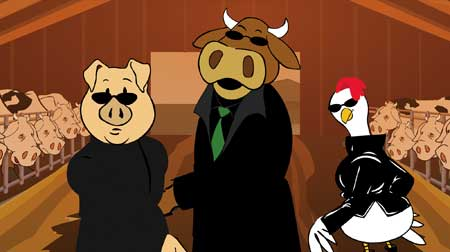

Are you the one that can help save the world from factoryfarms? Find out by watchingThe Meatrix II:Revolting, a three-minute animated video released bySustainable Table and Freerangegraphics.com. This edgy,information-packed film aims to spread the word about the dangersof industrial dairy farms.
The Meatrix II: Revolting and its predecessor play off theHollywood blockbuster film, The Matrix. In 2003, TheMeatrix won critical acclaim and educated 10 million viewersabout corporate farming practices. In the original film, a pignamed Leo is approached by a mysterious, trench-coat clad cow namedMoopheus, who introduces him to the stark reality of modern hogfactories. (In The Matrix, Morpheus teaches Neo that theworld humanity knows is an illusion, but that it can be saved ifthey work together to shatter the Matrix, a reality created bymachines.)
In the Meatrix II, Leo and Moopheus, together with Chickity,their partner in the resistance, visit a commercial dairy farm andlearn the ugly truth about how dairy cows are raised ? including anunnatural diet that feeds the dead back to the living; theirovercrowded, unsanitary living conditions; injections of synthetichormones that increase milk production; and the antibiotics cowsare fed to merely survive in these conditions.
The trio also learn about the pollution generated by industrialdairy farms, which creates massive quantities of toxic waste thatcontaminate our air and water, and finally face the truth aboutcorporate farming, rather than subscribe to 'the lie we tellourselves about where our food comes from.'
In addition to educating consumers about factory farming, theMeatrix Web site includesan Eat Well Guide with listings of local family farms, as well as avirtual tour of an industrial farm.
For more information on better food choices, visit theReal FoodPage onMotherEarthNews.com.
|
 Leo, Moopheus and Chickity from The Meatrix II. |
|
|